Introducción al curso
Resumen:
- Estudio de las cargas
- Tipos de motor y sus partes
- Tipos de programación
- Sistemas de lazo abierto
- Sistemas de lazo cerrado
- Motor paso a paso
- Servomotor
- Microcontrolador de un robot
1. Estudio de las cargas
Resistor, condensador, inductor
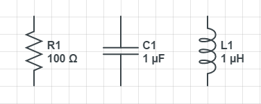
Control inductivo:
- Control Potencial
- ON-OFF
- PWM
- Control Señal
- Microcontrolador
- Microprocesador
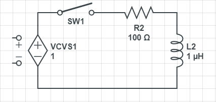
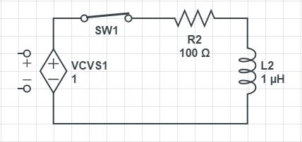
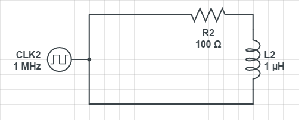
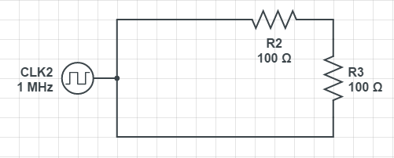
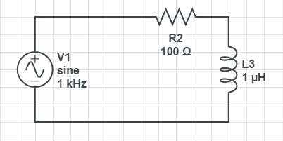
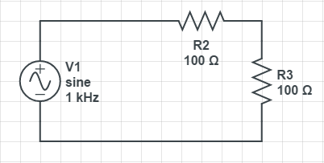
2. Motor
El motor eléctrico es un dispositivo que transforma la energía eléctrica en energía mecánica por medio de la acción de los campos magnéticos generados en sus bobinas. Son máquinas eléctricas rotatorias compuestas por un estátor y un rotor.
Partes de un motor
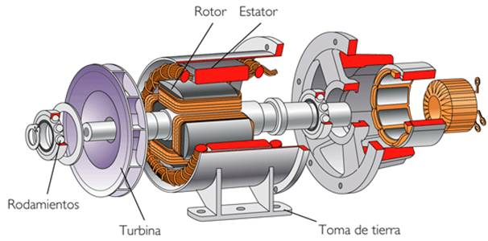
Tipos:
Motor AC: (Asíncrono) Sin bobinas
Motor DC: (Síncrono) Con bobinas
Corriente total = Corriente arranque + Corriente operación
Corriente arranque = n x Corriente operación
Donde : n = 5,6,7,8,9,10.
3. Tipos de programación
- Bajo Nivel
- Assembler (Binaria)
- Alto Nivel
- Arduino
- Matlab
- C
- C++
- PCC
- Pic Basic
4. Sistema de lazo abierto
Aquellos en los que la variable de salida (variable controlada) no tiene efecto sobre la acción de control (variable de control).- Sistema de lazo abierto con sensor
- Sistema de lazo abierto sin sensor
5. Sistema de lazo cerrado
Aquellos en los que la señal de salida del sistema (variable controlada) tiene efecto directo sobre la acción de control (variable de control).- Sistema de lazo cerrado con sensor
- Sistema de lazo cerrado sin sensor
6. Motor paso a paso
Los motores paso a paso son ideales para la construcción de mecanismos en donde se requieren movimientos muy precisos.La característica principal de estos motores es el hecho de poder moverlos un paso a la vez por cada pulso que se le aplique. Este paso puede variar desde 90° hasta pequeños movimientos de tan solo 1.8°, es decir, que se necesitarán 4 pasos en el primer caso (90°) y 200 para el segundo caso (1.8°), para completar un giro completo de 360°.
- Unipolares (5 - 6 cables)
- Bipolares (4 cables)
Motor paso a paso unipolar
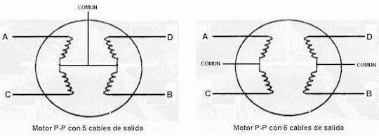
Motor paso a paso bipolar
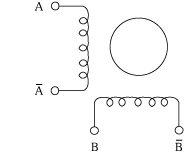
7. Servomotor
Un servomotor es un motor eléctrico al que podemos controlar tanto su velocidad como la posición del eje que gira (también llamada dirección del eje).Los servomotores no giran su eje 360º (aunque ahora hay algunos que si lo permiten), como los motores normales, solo giran 180º hacia la izquierda o hacia la derecha (ida y retorno).
Servomotor mínimo
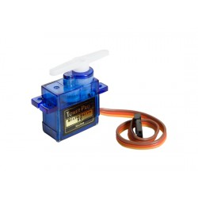
Gracias a esto, con los servomotores podemos crear toda clase movimientos de una forma controlada, por ejemplo en robotica para el control del movimiento del brazo de un robot o en los sistemas de radio control.
La mayoría de los servomotores que se utilizan son de corriente continua, pero también existen en corriente alterna.
8. Microcontrolador de un Robot
- Señales Digitales
- Logica 1 - 0
- VDigital
- 5v / 3.3v
- 0v / 0v
- 1bit
Nota:
1byte = 8bits
Word = 2byte = 16bits
2words = 4byte = 32bits